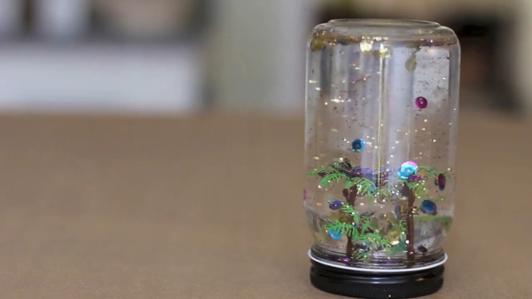

DIY Snow Globe Tutorial

Materials
- Small glass jar
- Plastic figurine/toy
- Glycerin (optional: helps glitter float)
- Glitter
- Sequins
- Water (optional: add food coloring for more fun!)
- Spoon
- Hot glue gun (Tip: if you don't have a hot glue gun, use super glue)
Directions
- Find a small figurine or toy to be the focal point of the snow globe
- Put glue on the inside of the jar's lid and stick figurine/toy to it
- Fill the jar with cold water
- Add 1-2 tsp. of glitter and stir
- Optional: if using Glycerin, add a few drops now
- Screw lid on jar
- That's it! Shake the jar or turn it upside down to see it "snow!"
href="https://www.pbs.org/parents/crafts-and-experiments/homemade-snow-globes">tutorial inspired by this one!
Contact Me
href="mailto:bethany.heisey@umconnect.umt.edu">bethany.heisey@umconnect.umt.edu
The University of Montana
32 Campus Dr
Missoula, MT 59812